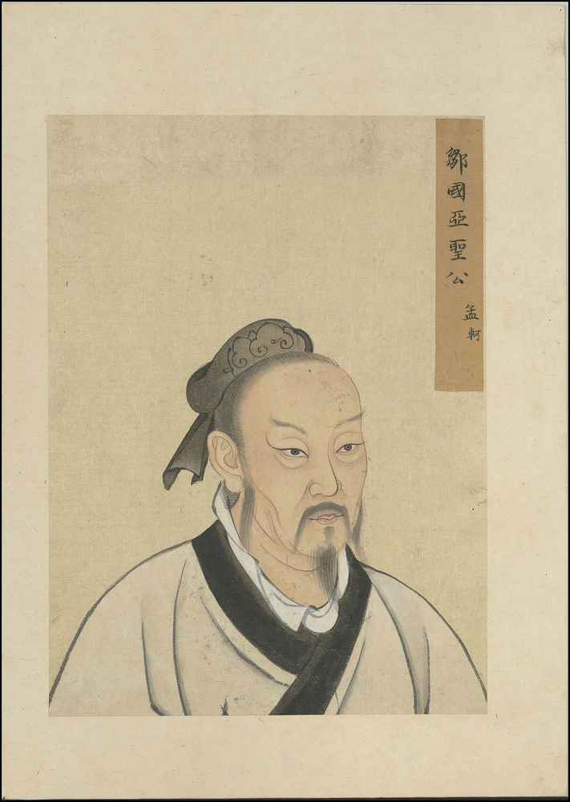
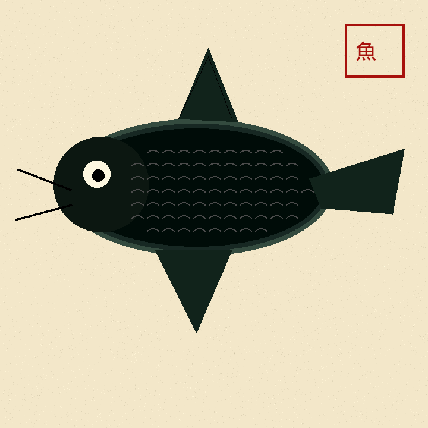

3G 第5組 · 搞笑版（內容認真 · 講法失控）
孟子上線：
專治班房亂局
呢頁唔係「標題完事」——係笑場開關。
撳孟子頭像換吐嘈句；撳金色掣開全螢幕；再掃去下一頁。
每頁有 punchline
撳孟子吐嘈
內容照樣有理據

撳我！我有話想寸你班…

孟子客串吐嘈主持 · 古典畫像（唔用人臉相）
開場互動 · 全班舉手
如果你是班長，你揀邊種？

以力服人
恐嚇／罰分 → 暫時屈服
VS

以德服人
公道／帶頭 → 心悅誠服
孟子：君子應該以德服人，不是只靠外力強迫。
吐嘈：靠罰分噤聲＝暫時屈服；公道帶頭先叫心悅誠服。
仁愛謙和 · 三種校園做法
一個精神，三種做法
① 仁愛
分享筆記——心存仁愛，不是換名氣。
孟子吐嘈：share 筆記＝仁；只 share 答案＝危險動作

② 恭敬謙讓
對師長同學有禮 → 得信任、少衝突。
孟子吐嘈：插隊嘅人，「敬」字未考合格

③ 和為貴
輸完仍一隊——和平安定靠仁愛之心。
孟子吐嘈：互怪＝內戰；互撐＝和為貴（加分）
三反其身
別人唔買帳？先反求諸己
「我對佢好好，點解疏遠我？」
孟子三步
- 愛人不親 → 反省「仁」
- 管人管不好 → 反省「智」
- 禮敬沒有回禮 → 反省「敬」

銅鏡意象圖 · 自我反省
自己端正了，天下才會歸順
吐嘈：唔好先鬧人——鏡先照你。
舍生取義 ·《孟子·告子上》
魚 VS 熊掌

魚 ≈ 生命／舒服
想避麻煩、少得罪人
VS

熊掌 ≈ 義
誠信、公義、做人底線
「二者不可得兼，舍生而取義。」
吐嘈：魚好食，抄襲唔好食——義先至係熊掌。
校園版取義
兩個場面，你會點揀？
考試：好友要你傳答案
幫＝人情；拒絕＝得罪人？
取義：拒絕作弊，改為幫温習＝守誠信
孟子：人情唔可以食義。
孟子：人情唔可以食義。
操場：見到有人被欺負
裝看不見較安全？
取義：通報老師／陪伴求助＝義 > 怕事
孟子：裝盲＝力服恐懼。
孟子：裝盲＝力服恐懼。
不是叫人亂送命，而是價值排序：義禮 > 只顧舒服
以德服人
王者路 vs 霸者路
德 · 王者
出於仁愛真心 → 心悅誠服
PK
力 · 霸者
假借仁義／武力 → 暫時屈服
匯報金句：心服才長久，力屈只一時。
代表著作
《孟子》速記
7
篇（各分上下）
261
章左右
語錄
記錄言行
上台必講
- 舍生取義出自《孟子·告子上》
- 德服／力服：心悅誠服 vs 暫時屈服
- 三反其身：仁／智／敬
- 憐憫＋羞恥 → 尊嚴
孟母教子典故古典畫
Game time · 唔會離開簡報